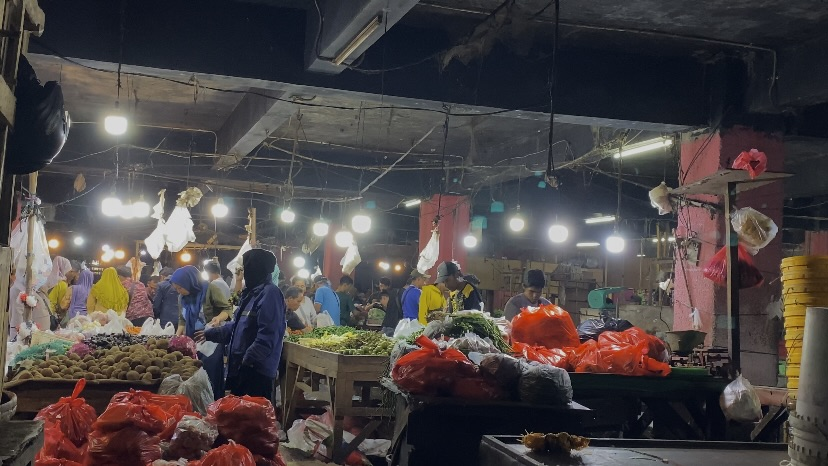

Kenaikan Harga Pangan Menjelang Nataru
Indah Sukma Anom - koma.com
Rabu, 11 Des 2024 21:26 WIB
Aktivitas di Pasar Induk Cikema, Jl. Raya Bogor, Cibinong, Jawa Barat
Cibinong, Koma.com - Menjelang Natal dan Tahun Baru (Nataru), masyarakat Indonesia kembali dihadapkan pada kenaikan harga pangan yang signifikan. Fenomena ini sudah menjadi tradisi tahunan, di mana permintaan akan bahan makanan meningkat drastis seiring dengan semakin dekatnya hari raya.
Kenaikan harga pangan ini disebabkan oleh beberapa faktor, antara lain meningkatnya permintaan akan bahan makanan, keterbatasan pasokan, dan biaya produksi yang meningkat. Selain itu, kenaikan harga bahan bakar minyak (BBM) juga berdampak pada kenaikan harga pangan, karena biaya transportasi dan produksi meningkat.
“Menjelang Nataru ada beberapa harga pangan yang naik, selain karena tingginya permintaan tapi juga karena faktor cuaca. Akhir-akhir ini curah hujan meningkat sehingga beberapa bahan pangan seperti umbi-umbian rawan busuk karena kehujanan di jalan. Tingginya permintaan dan terbatasnya ketersediaan jadi faktor kenaikan harga khususnya di pasar ini (Pasar Induk Cikema)” Ucap Yusuf, salah satu pedagang di pasar Induk Cikema.
Dampak dari kenaikan harga pangan ini tidak hanya dirasakan oleh konsumen, tetapi juga oleh para pelaku usaha kecil dan menengah yang berjuang untuk mempertahankan margin keuntungan mereka. Banyak dari mereka terpaksa menaikkan harga jual produk mereka, yang pada gilirannya dapat mengurangi daya beli masyarakat.
Untuk mengatasi masalah ini, pemerintah perlu mengambil langkah-langkah strategis, seperti melakukan pengawasan harga dan memastikan ketersediaan pasokan pangan. Selain itu, edukasi kepada masyarakat tentang pengelolaan anggaran belanja dan penggunaan bahan pangan lokal juga sangat penting. Dengan langkah-langkah ini, diharapkan masyarakat dapat merayakan Nataru dengan lebih tenang tanpa terbebani oleh kenaikan harga pangan yang signifikan.